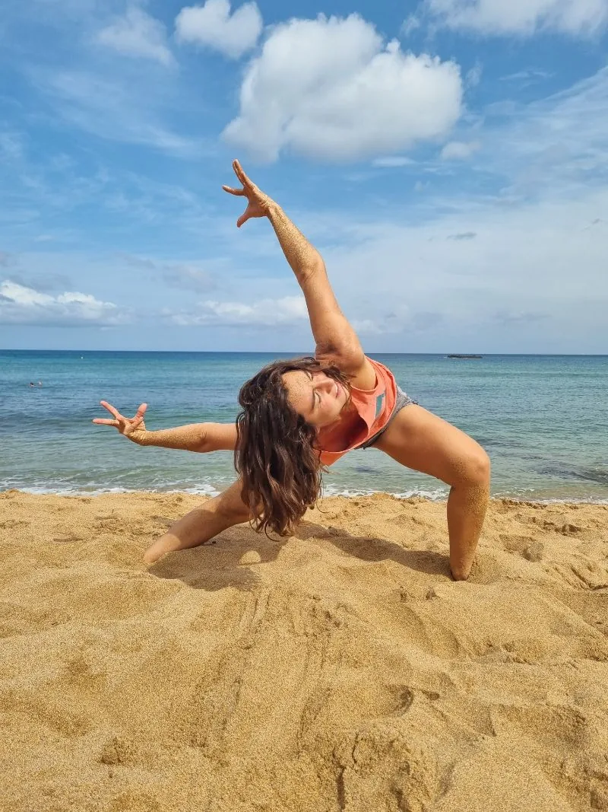

EXPRESIÓN CORPORAL
"Cuando bailo no puedo juzgar, no puedo odiar, no puedo separarme de la vida. Solo puedo ser feliz y sentirme pletórico." — Hans Bos
EXPRESIÓN CORPORAL
El cuerpo expresa lo que no podemos (o no queremos) decir con palabras.
A veces el cuerpo “se tensa” en una emoción y sentimos que “no quiere salir”.
En ese momento, si nos permitimos conectar, podemos sentir que un abrazo, un grito o llanto puede ser la llave a “destrabarlo”.
Expresar nuestras intenciones, emociones, nuestro sentir más profundo no es tarea fácil, sin embargo, el movimiento es una de las puertas que nos permite observar el alma.
Menear los hombros, abrir las caderas, arquear la espalda nos sensibiliza, y si prestamos atención, podemos escucharnos. Esa voz con intuición, la que pide amorosamente y con mucha humildad que la dejes salir con un sonido, con un giro, con un caricia a tí misma.
Ese es el viaje al corazón. Esa voz del fondo de tu alma educa sin decir; permite sanar nuestro cuerpo sin curar. Nos invita a vivir con humanidad, con sentir, con compasión hacia nosotras mismas y hacia los demás.
Déjate guiar por tí misma. Libérate.
— Casandra Couso —

PREGUNTAS FRECUENTES
¿Puedo practicarlo si estoy embarazada?
Puede llevarse a cabo en cualquier momento del embarazo. Sólo pedimos responsabilidad en comunicar el estado de su embarazo para tomar precaución.
¿Cómo son las clases y qué se hace en ellas?
Las clases son muy variadas en ritmos, música y movimiento. Por lo general, al comienzo de la clase hacemos una breve meditación para centrarnos en el momento y conectar con el sentir que vamos a explorar y expresar con el baile, para finalizar dedicamos unos momentos a la relajación para integrar lo trabajado en la clase.
¿Qué tipo de música se utiliza?
Dependiendo de la clase. Puede ser música que llegue al corazón, sonidos que invitan a la sensibilización. Puede ser música movida para trabajar la alegría, mejorar la movilidad y sincronicidad del cuerpo. La música depende de la clase que llevemos adelante, pero por lo general es muy variada, para abarcar distintos bailes, movimientos y así expresar lo que sintamos que es necesario emitir con el arte de la danza.